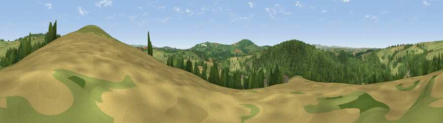

Viewpoint near Milton Abbot
#21026 in England · top 38% of its area beats it · near Milton AbbotThe view, rendered

A 360° render of this exact spot computed from the terrain model, tree cover and land cover — summer colours, afternoon light, calibrated against photographs of famous viewpoints. Real trees, hedges and buildings will differ in detail.
The panorama
Grey silhouette: terrain skyline in each direction (720 bearings, Earth curvature and refraction included). Dashed green: skyline with trees (+15 m) and buildings (+8 m) as obstacles. Blue strip: how far the ground is visible on each bearing.
Where the view opens
Wedge length = distance to the farthest visible ground on that bearing (vegetation-aware). Rings at 10, 25 and 50 km.
What fills the view
46% woodland · 41% grassland · 13% cropland
Angular shares of the visible panorama (visual magnitude), not map area. Landscape diversity 0.43 (0–1 Shannon).
Key numbers
More beautiful places nearby
The staircase of upgrades: each row has a higher view potential than everything closer. Driving times are estimates from straight-line distance, calibrated against real road routing — check an actual route before setting out.
| Place | Direction | Drive | Score |
|---|---|---|---|
| Viewpoint near Milton Abbot | ENE · 0 km | ~2 min | 64.2 |
| Viewpoint near Chillaton | NE · 4 km | ~10 min | 65.2 |
| Viewpoint near St Ann's Chapel | S · 6 km | ~13 min | 73.5 |
| Hingston Down | SSE · 6 km | ~13 min | 78.3 |
| Kit Hill | SSW · 7 km | ~14 min | 80.3 |
| Viewpoint near Dousland | ESE · 18 km | ~31 min | 81.0 |
| Viewpoint near Lee Moor | SE · 22 km | ~36 min | 82.7 |
| Viewpoint near Downderry | SSW · 24 km | ~40 min | 83.5 |
50.57539, -4.26633 · source: screening · position refined by local search. Computed location — check access rights before visiting.